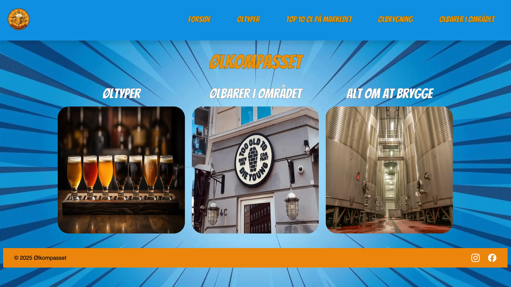
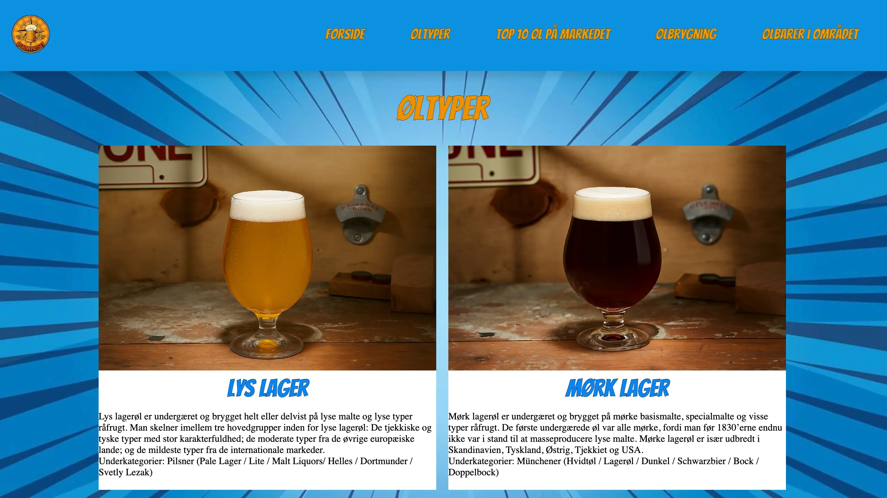
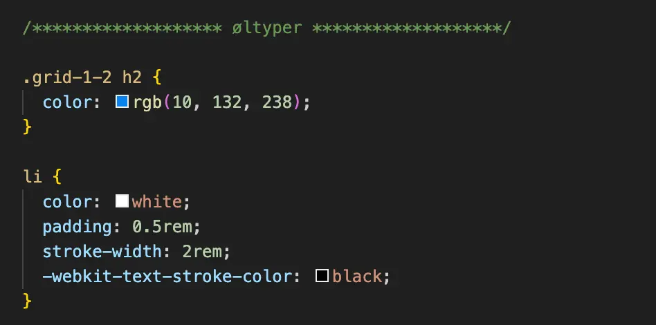
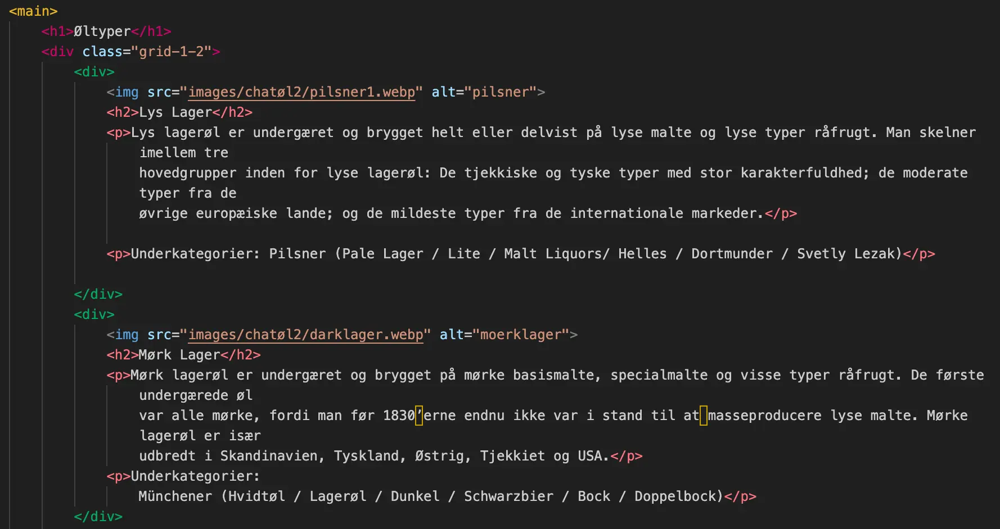

Tema 3 - Grundlæggende UX/UI
Grundlæggende UX/UI - Formål
Formålet med dette emne var at udvikle en hjemmeside med udgangspunkt i et valgfrit emne og samtidig bygge videre på de værktøjer og kompetencer, jeg opnåede i det forrige tema. Det forventedes, at jeg kunne anvende design-programmet Figma i idéudviklingen af hjemmesiden, herunder udarbejde moodboard, styletile, wireframes og prototyper.
Derudover var det en forudsætning, at jeg kunne benytte HTML og CSS til strukturering og opbygning af sitet.
Med fokus på User Experience Design arbejdede jeg med at udvikle og formidle hjemmesiden ud fra en brugercentreret tilgang. Designbeslutninger blev truffet på baggrund af research, test og konkrete brugerdata frem for mavefornemmelser og antagelser.
Et centralt formål med temaet var desuden at lære at dokumentere og formidle UX/UI-processen – herunder research, testresultater og designvalg – på en klar og professionel måde over for interessenter.




Læring og proces
Gennem dette tema lærte jeg i højere grad at opbygge en hjemmeside fra bunden på egen hånd – fra idéudvikling og research til prototype og videre til det færdigkodede site.
Jeg fik et klart indblik i vigtigheden af at dokumentere design- og udviklingsprocessen samt hvordan brugertest og konkrete brugerindsigter kan have stor indflydelse på det endelige produkt.
I forhold til ideudviklingen og processen bag det endelige site, startede jeg med at brainstorm en masse ideer, omkring hvad siden kunne handle om. Jeg endte på at lave en side om specialøl, hvor formålet var at formidle viden om emnet og samtidig guide brugeren videre til nogle af de bedste nærliggende specialølbarer i København.
Kodningsmæssigt blev jeg meget klogere på opsætning af grid, men fandt det også på daværende tidspunkt udfordrende af ændre padding og margin i det forskellige bokse på siden.
Da jeg skulle uploade min side til GitHub gik det op for mig at jeg havde brugt billeder taget fra nettet, hvorefter jeg var nødsaget til enten at tage min egne eller få AI til at generere nogle for mig. Derudover havde jeg heller ikke om formateret mine billeder til webp, hvilke gjorde at filen unødig stor.
Dette er alt noget jeg har taget med mig efterfølgende og blevet klogere på.